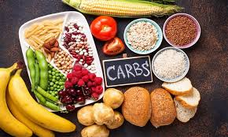
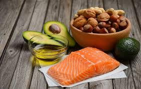
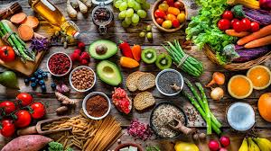
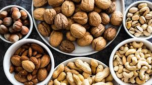

Carbohydrates
Main energy source for the body. Found in rice, bread, pasta and potatoes.

Protein
Builds muscle and repairs tissues. Found in chicken, fish, eggs and beans.

Healthy Fats
Supports brain and hormone function. Includes avocado, nuts and olive oil.

Vitamins
Boost immunity and improve body functions. Found in fruits and vegetables.

Minerals
Strengthens bones and blood health. Includes milk, red meat and leafy greens.

Hydration
Water keeps your body active and balanced. Drink 6–8 glasses daily.